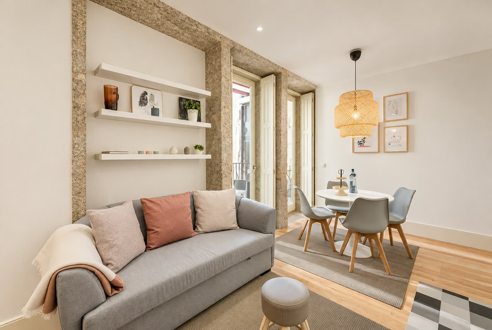
Porto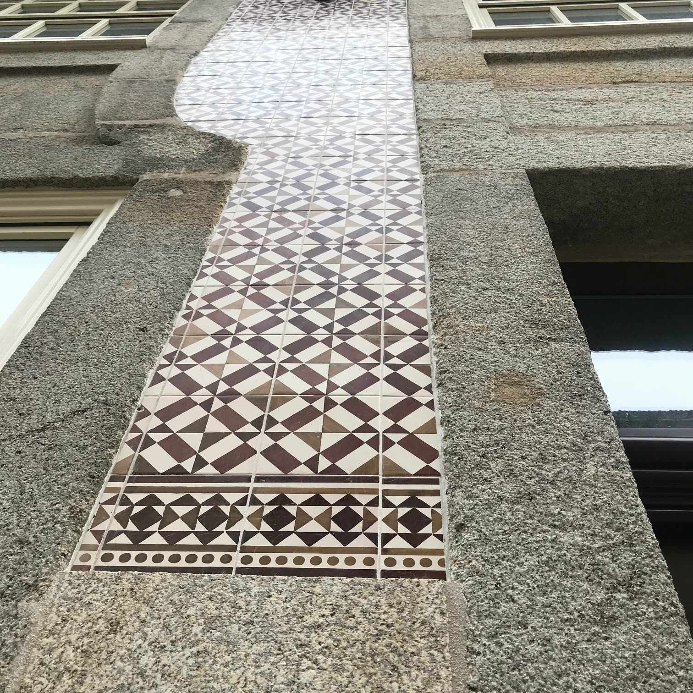
Rua do Almada
Neste projeto, situado na emblemática Rua do Almada, no Porto, quis criar uma casa onde os hóspedes se sentissem bem desde o primeiro momento. Um espaço prático, confortável e acolhedor, pensado para quem quer descobrir o Porto e, no final do dia, regressar a um lugar onde se sente em casa.
A decoração combina tons suaves, madeira natural e pequenos apontamentos de cor, criando um ambiente descontraído, sem excessos, mas com personalidade. Cada escolha foi pensada para aproveitar bem o espaço e garantir tudo aquilo de que se precisa durante uma estadia.
E há ainda um pequeno espaço exterior que convida a abrandar o ritmo, tomar um café ou simplesmente aproveitar um momento de tranquilidade, mesmo no coração da cidade.
Porto
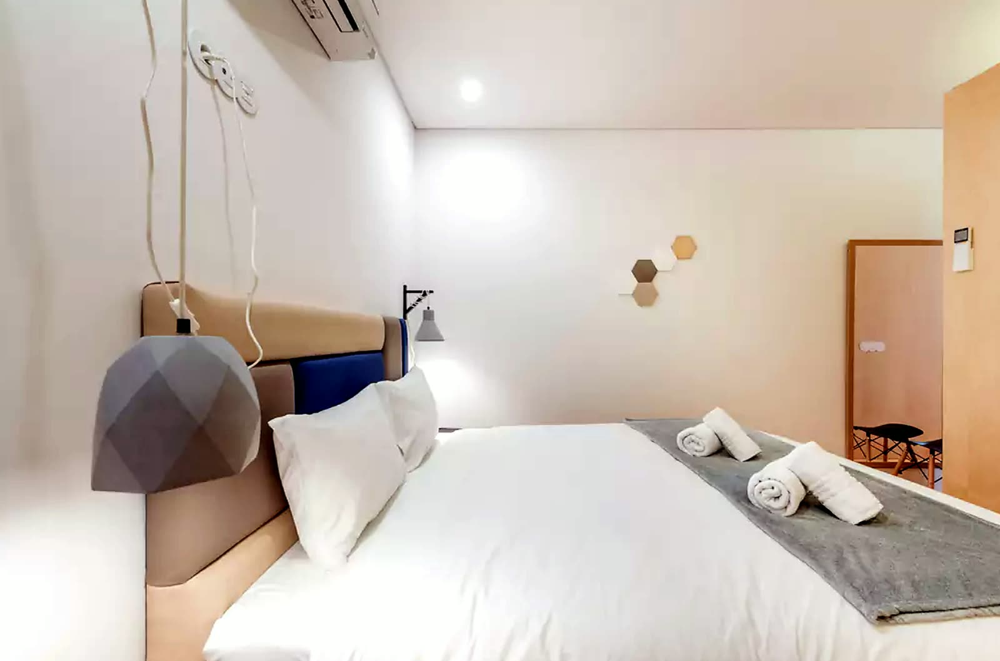
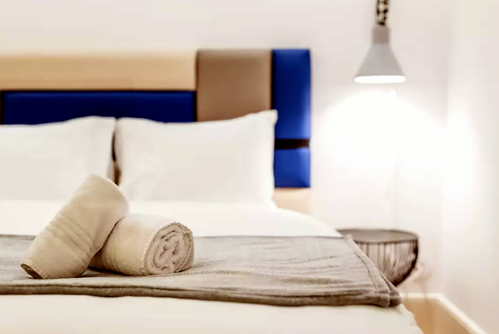
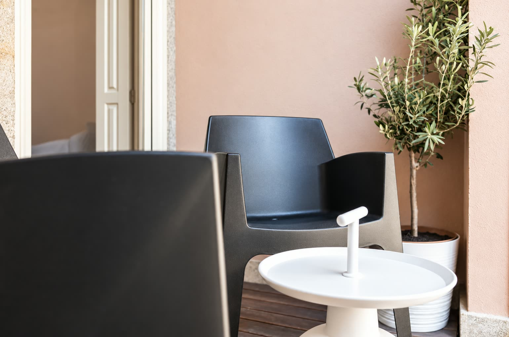
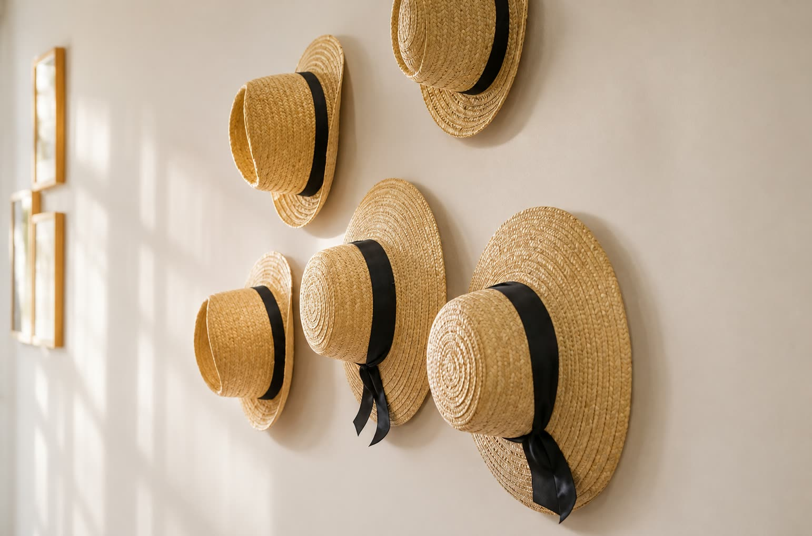
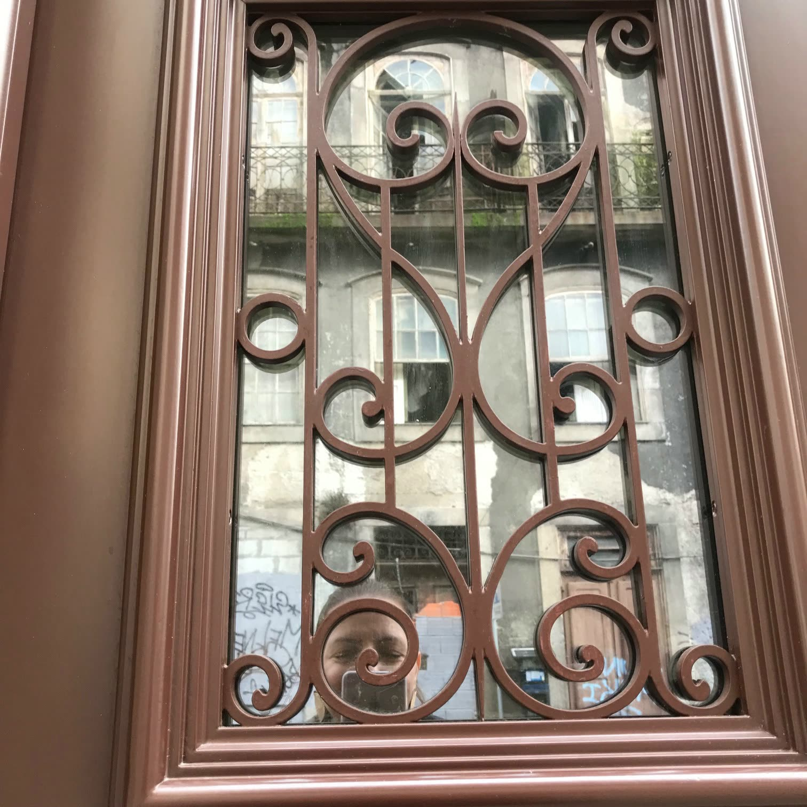
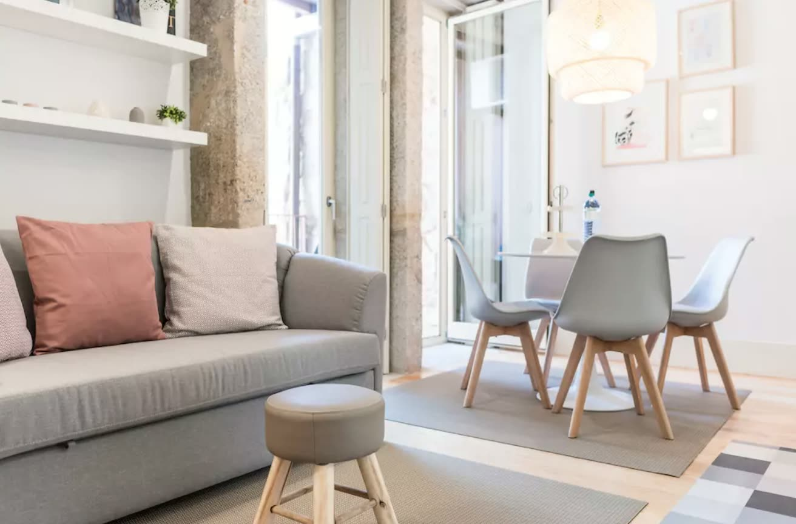
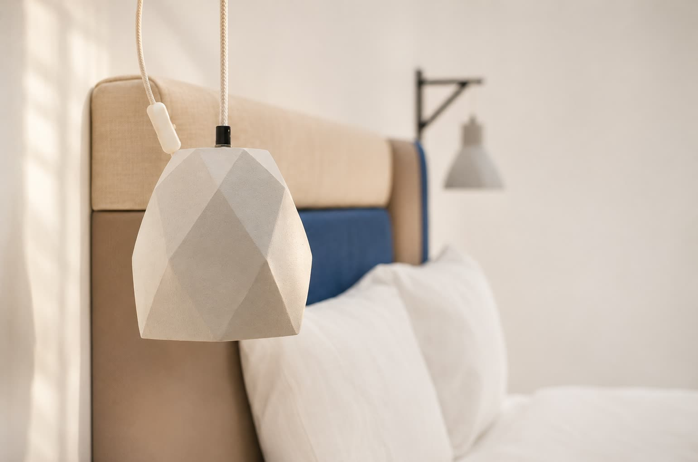
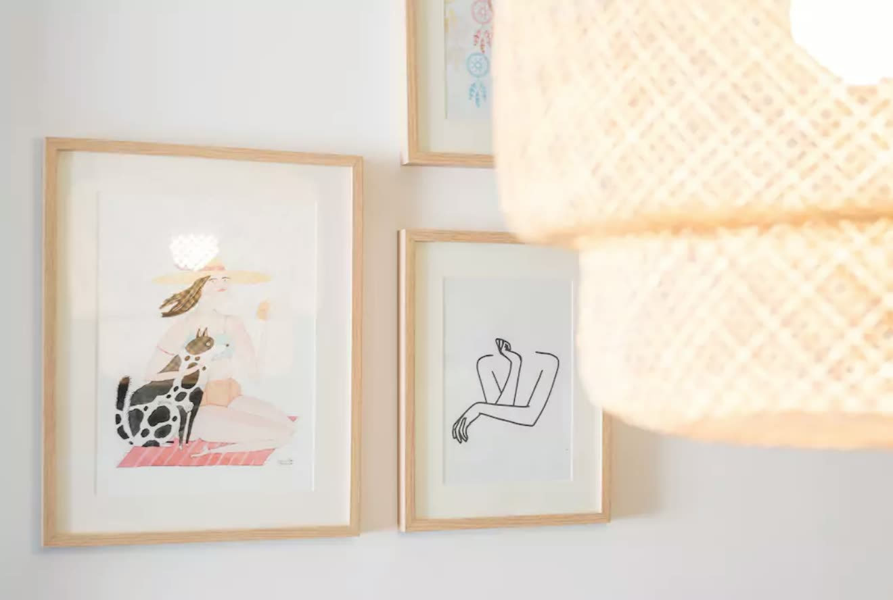
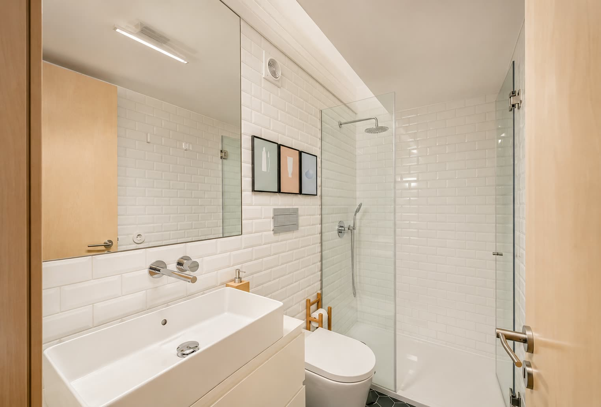
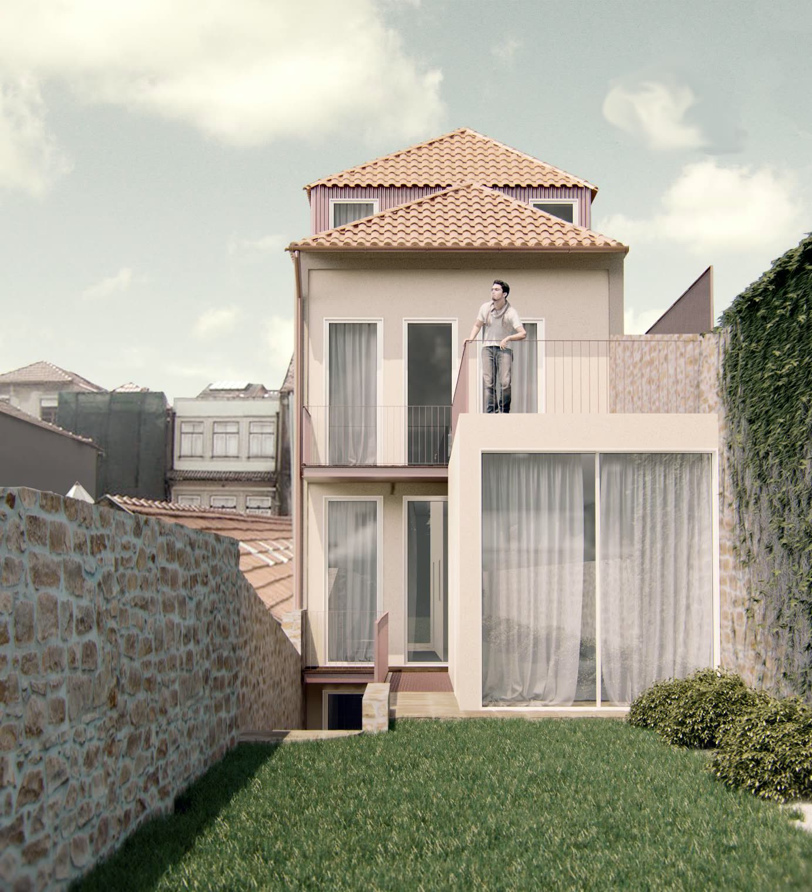
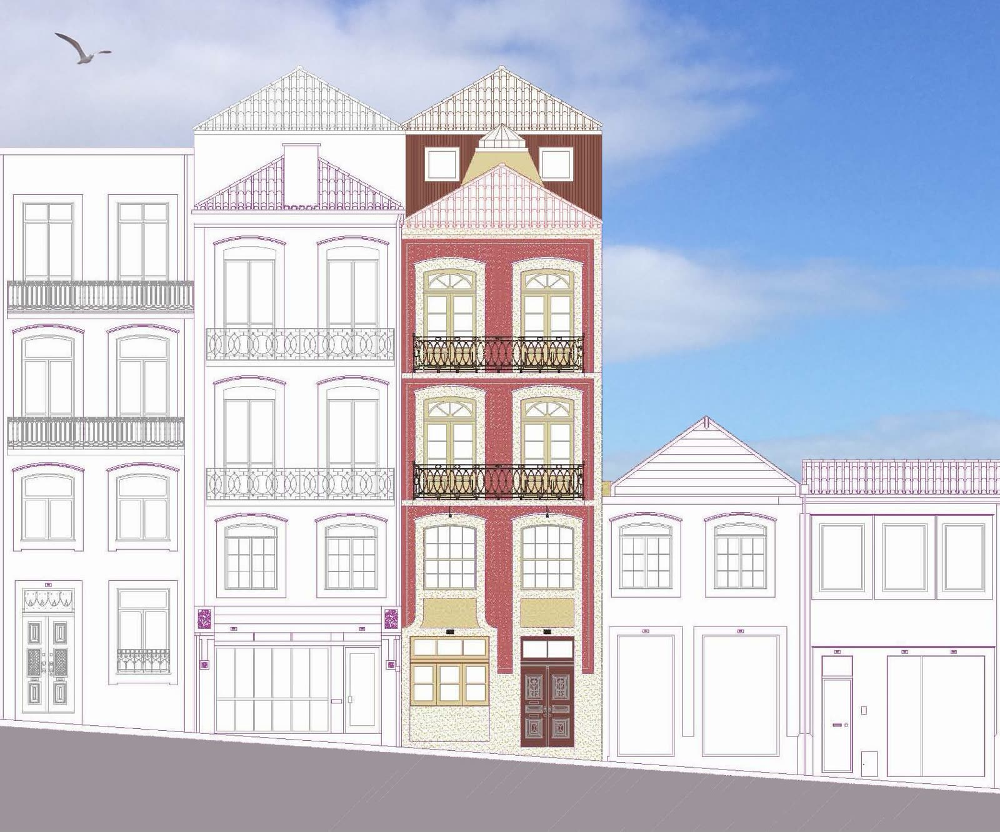
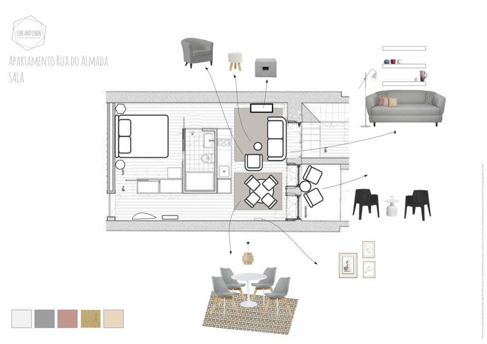
Design de interiores — Line and Linen
Direção de projeto — Alexandra Martins
Porto, Portugal